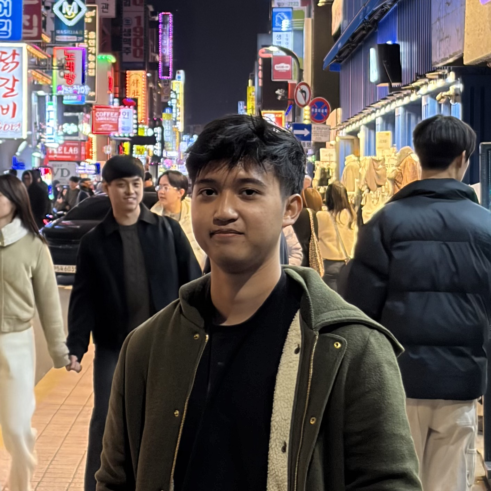

~$ whoami
Anang Ayman
I build backend systems & AI solutions.
I'm a Software Engineer specializing in backend infrastructure and machine learning, currently studying Computer Science at Sungkyunkwan University in Seoul. Previously, I engineered OIDC / OAuth 2.0 infrastructure at Digital Agri Solutions.

Experience
Backend Engineer Intern · Digital Agri Solutions Pty Ltd.
Melbourne, Australia | Remote
Engineered and deployed a containerized OIDC Identity Provider to Google Cloud Platform (GCP) using Flask and Docker, transitioning a legacy system to modern OAuth 2.0 standards within an Agile Scrum team.
Leadership & Volunteering
Community impact, organizational leadership, and extracurricular engagements.
Manager of Academic Events @ HIMTI Binus
Spearheaded cross-campus operations and strategic corporate partnerships for Greater Jakarta's premier academic tech initiatives. Directed a distributed 60+ person cross-functional team across 3 university campuses to bridge the gap between student talent and Tier-1 enterprise sectors.
- Executive Leadership: Appointed Project Leads for 5 major events, providing high-level strategic guidance and serving as the final authority on critical project decisions.
- Corporate Engagements: Coordinated industry partnerships and student webinars with NVIDIA, Deloitte, BCA, CIMB Niaga, and Bank Mandiri.
- Industry Representation: Acted as an organizational representative to bridge the gap between the university organization and corporate stakeholders.


Computer Teacher @ Dompet Dhuafa
Guided 15 Indonesian domestic helpers through a 4-month intensive digital literacy program in Hong Kong. Developed a custom curriculum to bridge the digital divide, moving students from basic computer operation to entrepreneurial tool proficiency.
- Certification Success: Delivered training in MS Office, Email, and Internet Safety, leading to 100% of the cohort earning official Certificates of Completion.
- Entrepreneurial Output: Taught Canva for marketing and design; directly enabled a graduate to create a custom banner for her new business.
- Practical Translation: Conducted all lectures in Bahasa Indonesia, using simplified analogies to make technical jargon accessible for adult learners.
Teaching Scholarship @ BINUS University
Awarded an exclusive teaching scholarship based on high academic merit to mentor and tutor peers in core Computer Science curriculum.
- Peer Mentorship: Broke down complex algorithmic and programming concepts into digestible explanations for fellow undergraduate students.
- Academic Improvement: Fostered collaborative study environments aiming to raise collective academic performance and exam readiness.
Volunteer Educator @ Orphanage Initiatives
Organized educational activities and provided entertainment and mentorship for orphans (anak yatim), fostering a supportive and engaging learning environment.
- Activity Coordination: Structured and executed engaging day-events tailored for children's educational and emotional growth.
- Youth Mentorship: Acted as a role model, dedicating time to listen, teach fundamental life skills, and encourage academic curiosity.


Featured Projects
Selected works in AI, Engineering & Research.

Custom OIDC Identity Provider
Engineered a centralized authentication system for Digital Agri Solutions. I translated business requirements into a secure OAuth 2.0 implementation, enabling Single Sign-On (SSO) for internal tools.
*Source code is proprietary. Case study focuses on system architecture and standards compliance.
View System Architecture
SignLingo AI
Architected an interactive sign language education platform as the Lead Backend and Solo AI Developer. I engineered a custom hybrid CNN-LSTM pipeline from scratch, translating complex gesture data into a full technical research paper.
Education
BINUS University 3.88/4.00
Bachelor of Computer ScienceSpecializing in AI & Web Development with a strong foundation in scalable software engineering principles.
Sungkyunkwan University
Exchange Student ProgramSeoul, South Korea
Immersive exchange focusing on advanced computing electives including Mobile App Programming, Computer Security, and a comprehensive Capstone Design Project.
Delia School of Canada
High School DiplomaOntario curriculum with distinction, focusing on Calculus and Computer Science.
Certifications
IELTS Band 8
IELTS · June 2025